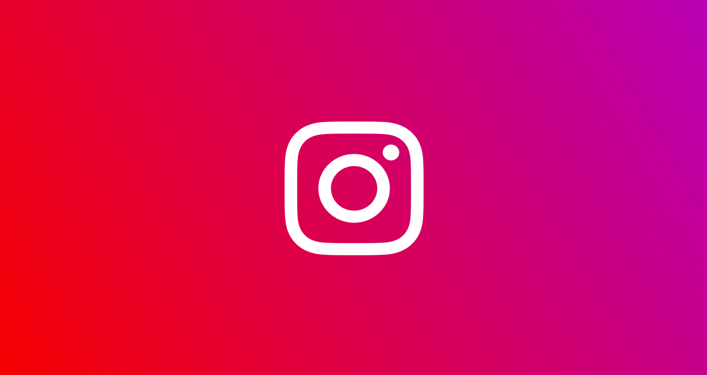

Ev Ev |
Yazılım | Mobil | Oyun | Sosyal |
|
Sosyal Kategorisindeki Yazılar |
||||
| Anahtar Kelimelerle İnstagram İşletmenizi Büyütebilirsiniz | ||||
| İnstagram’ın anahtar kelime arama özelliği ile daha fazla kişiye ulaşabilir ve İnstagram işletmenizi büyütebilirsiniz. İnstagram kullanıcıları, son güncelleme öncesinde bir içerik aratırken konu etiketlerinden faydalanıyordu. | ||||
| Devamını oku | ||||
Anahtar Kelimelerle İnstagram İşletmenizi Büyütebilirsiniz |
||
|  | ||
| Sosyal | 10/01/2021 | Samet Özkan |
|
İnstagram’ın anahtar kelime arama özelliği ile daha fazla kişiye ulaşabilir ve İnstagram işletmenizi büyütebilirsiniz.
İnstagram kullanıcıları, son güncelleme öncesinde bir içerik aratırken konu etiketlerinden faydalanıyordu. Ancak son güncellemeyle birlikte anahtar kelime arama özelliği İnstagram’a gelmiş oldu. Bu özellik ile artık kullanıcılar anahtar kelimeler üzerinden arama yapabilecek ve paylaşımlar konu etiketine sahip olmasalar bile ilgili anahtar kelimeler sayesinde kullanıcılara erişebilecek. Bu yazıda, hashtag kullanmasanız bile gönderilerinizin kullanıcılar tarafından bulunmasını sağlayacak anahtar kelimelerin öneminden bahsedeceğiz. Potansiyel kitlenizle etkileşim kurmak için en uygun anahtar kelimeleri kullanmak işletme hesabınızın büyümesini sağlayacaktır.En uygun anahtar kelimeleri ve söz öbeklerini kullanmak için hedef kitlenizi iyi tanımalısınız. İşletmenizle ilgili aranma hacmi yüksek olan kelimeleri seçmeniz hedef kitlenize daha kolay ulaşmanızı ve işletmenizin daha hızlı büyümesini sağlayacaktır.Pazar araştırması ve rekabet analizi yapmalısınız.Anahtar kelimeler kullanarak sektördeki rakiplerinizin neler yaptıklarını, hedef kitlenizin karşılaştıkları sorunları ve istekleri analiz etmeniz ve bu analizler sonucunda paylaşımlarınıza yön vermeniz daha iyi içerikler oluşturmanıza ve sosyal medyada daha güçlü bir işletme olmanıza yardımcı olacaktır.Önceden paylaşımlarınızda anahtar kelimelere yoğunlaşmak paylaşımınızın arama motorlarında daha üst sıralarda görünmesini sağlarken İnstagram anahtar kelime arama özelliğinin gelmesiyle birlikte potansiyel müşterilerinizin Instagram’da arattıkları (sizin de içeriklerinizde kullandığınız) anahtar kelimeler sayesinde işletmeniz daha fazla ilgi görmeye başlayacaktır. Her ne kadar basit bir güncelleme gibi gözükse de kitlenizi ve müşterilerinizi arttırmak için oldukça heyecan verici. Instagram paylaşımlarında anahtar kelimeler için özel çalışmalar yapan işletmeler, etkileşimlerinin her zamankinden daha iyi olduğunu ve sürekli artış gösterdiğini söylüyor. Eğer siz de bir Instagram işletme hesabına sahipseniz “anahtar kelimelere” mutlaka odaklanmalısınız. |
|
|
|
İlginizi Çekebilecek Diğer Yazılar |
|||||||||||||||||||||||||||||||||||||||||||||||||||||||||||||||||||||||||||
|
|
|
|
||||||||||||||||||||||||||||||||||||||||||||||||||||||||||||||||||||||||
| Site & Tema: Samet Özkan | Github |